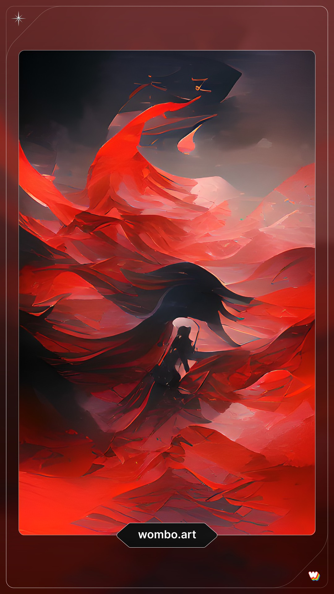
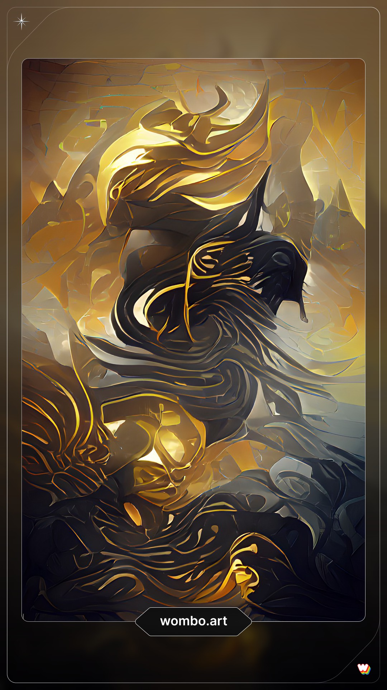

Hello, my name is Ushna Khalid and I am a Digital futures student who just finished my second year.
I like to do character and environment design. I am interested in becoming a game developer and am
working on a few game projects for my portfolio.
I made my self-portrait using "Wombo Art"
It is an AI that uses the word you input and a theme you select and creates an abstract piece with
that information. I really love messing around with this AI and creating different pieces for bursts
of inspiration. I also love to try to make out a form in these artworks.
These two images here, as abstract and random as they are, both use minimal colour pallets, both of
which are my favorite combination of colours. I generated a bunch of AI pieces using these two
themes and chose the ones that seemed to fit me more. I really love these types of designs and try
to implement these types of techniques in my art. I also love to plan out styles of paintings I
would love to start one day.
One idea that I think would have worked well was when you press
the keyboard, that
character shoots up and bounces around. I made a draft of it and it was fully complited, however im
not sure how it even works and its a miracle that it does

